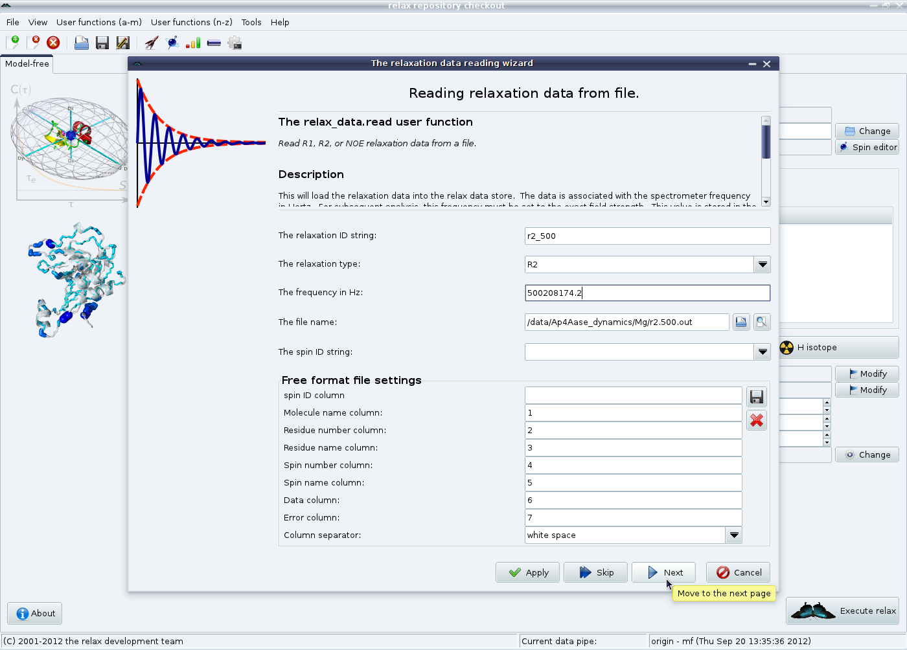
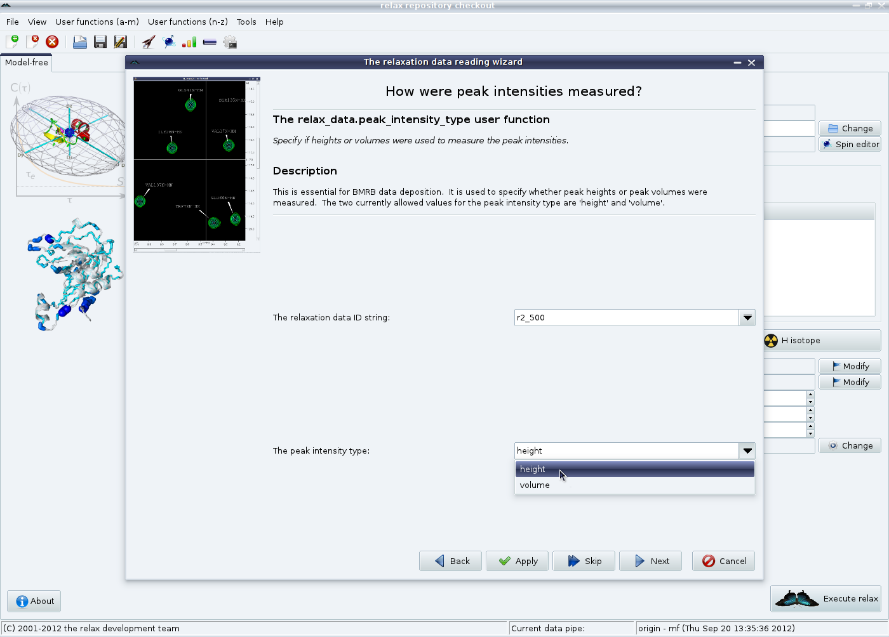
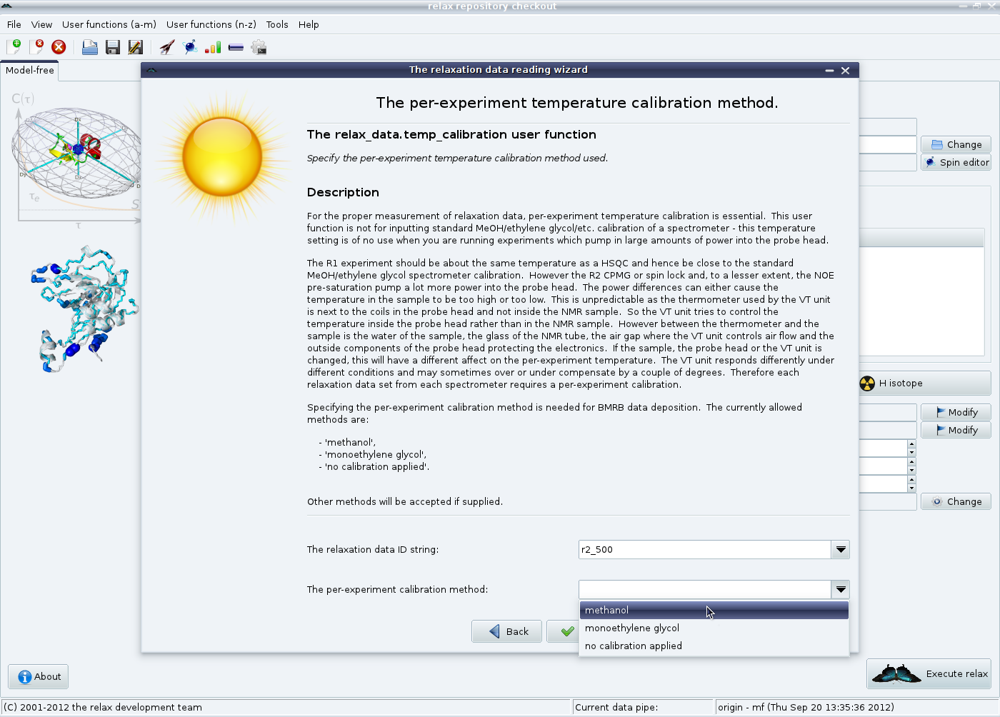
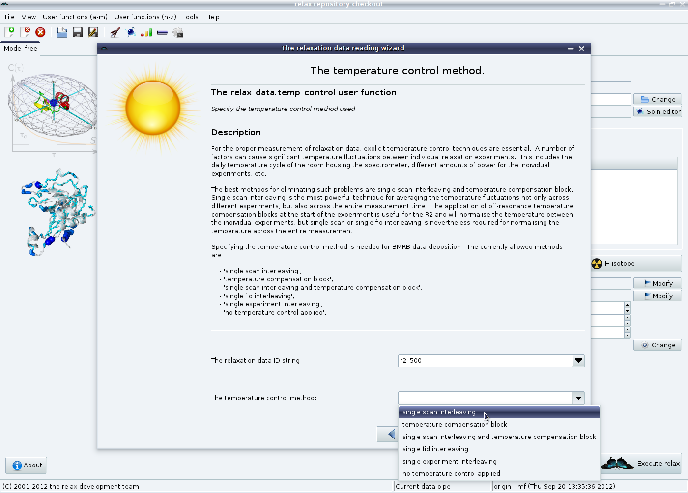
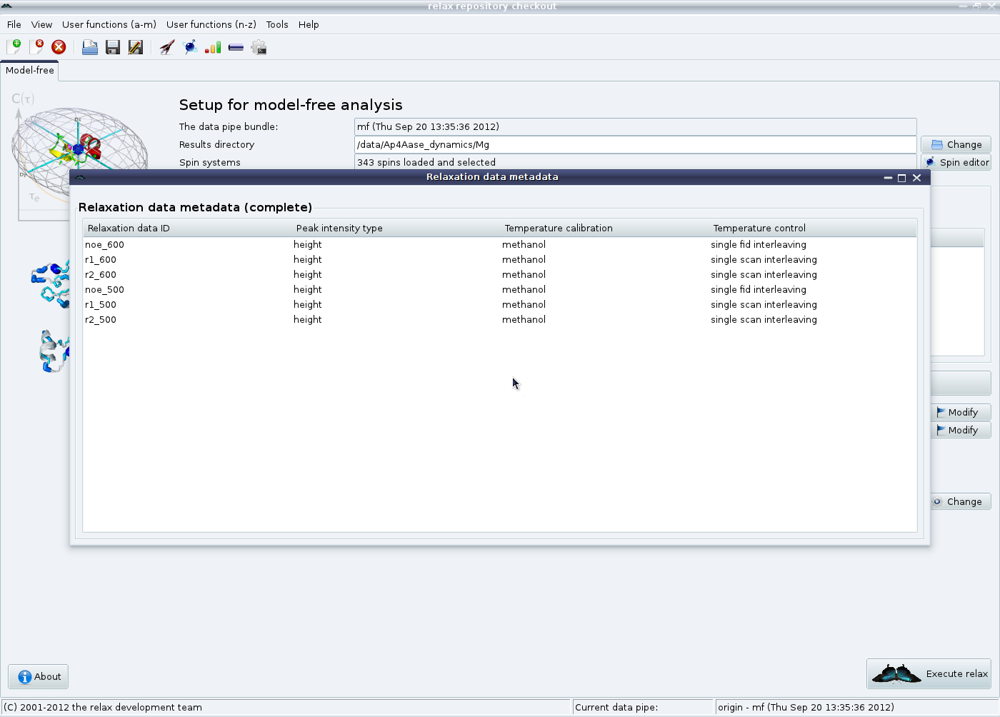

Next: d'Auvergne protocol GUI mode Up: The new protocol in Previous: d'Auvergne protocol GUI mode Contents Index
The relaxation data can either come from plain columnar formatted text files (such as if relax was used for the NOE, R1 and R2 analyses) or from the Bruker Dynamics Centre. For the former, click on the ``Add'' button in the ``Relaxation data list'' GUI element. This route will be used for this tutorial. For the later, click on the ``Add Bruker'' button. After clicking on ``Add'', you will see the relaxation data loading wizard:
|

|
In this first page, the unique relaxation data identification string (``r2_500''), the relaxation data type (``R2''), the frequency in Hertz (``500208174.2'') and the file (``r2.500.out'') are specified. If your data comes from another program, you many need to change the values in the ``Free format file settings'' element. Click on ``Next'' to load the data from the file.
The next wizard pages are for loading the metadata which is used in the BioMagResBank deposition of your final results. The first is how the peak intensities were measured, either peak heights or volumes. Select the appropriate value, then click on ``Next''.
|

|
Then the temperature control method is given.
For more details, please read the documentation provided in the wizard and see section 5.2.1 on page ![[*]](crossref.png) .
Click on ``Next'' to continue.
.
Click on ``Next'' to continue.
|

|
The temperature calibration method can finally be specified.
Again, see section 5.2.1 on page for the full details.
Click on the ``Finish'' button to close the wizard.
|

|
After you have repeated this for the NOE, R1 and R2 at both 500 and 600 MHz, you should now see:

|
Check that the metadata has been properly entered by clicking on the ``View metadata'' button in the ``Relaxation data list'' GUI element:
|

|